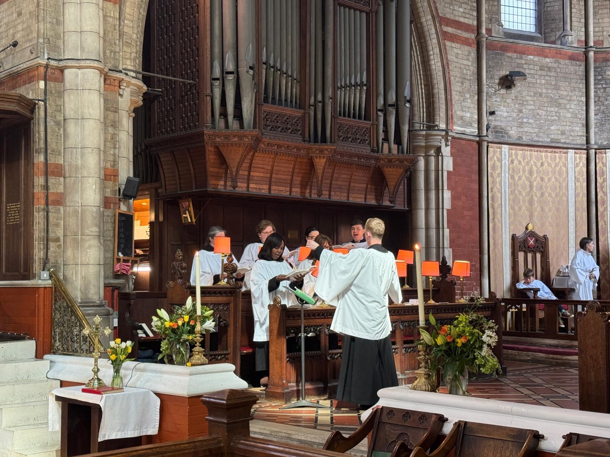
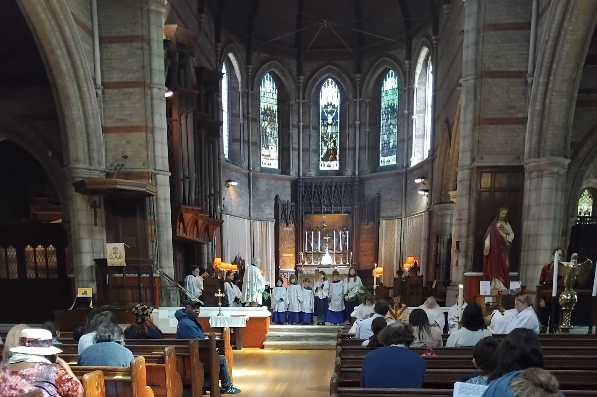

Music is at the heart of worship at Emmanuel — and our choir combines choral excellence with a welcoming, inclusive spirit.
We believe that music plays a pivotal part in congregational worship, enhancing and deepening our connection to God.
Our choir combines choral excellence with a welcoming and inclusive spirit. We sing at the 10:30am Eucharist every Sunday, offering a diverse repertoire of sacred music, ranging from Renaissance polyphony to contemporary works. In addition to our weekly worship, the choir leads the music for special services at key points in the liturgical year.
We are always keen to welcome new singers and musicians of all ages and abilities. The choir rehearses once a week from 7:15–8:15pm on Wednesday evenings, and sings as part of the 10:30am Eucharist each Sunday. Whilst regular commitment is encouraged, it is not necessary to be available for every rehearsal and service to be a member of the choir.
We are a friendly and welcoming choir, with a great social scene, often going for drinks post-rehearsal. An ability to read sheet music is desirable, but not necessary provided you have a willingness to learn. If you are interested, please contact our Director of Music, Will, at w.g.rose41@gmail.com.

Music at Emmanuel is steeped in illustrious tradition. The English composer Harold Darke was organist at the church from 1906–1911, during which period he composed his setting of Christina Rossetti's "In the Bleak Midwinter".
In contrast to many choral societies, the choir tackles new repertoire on a weekly basis, with the aim of providing fulfilling and musically enriching opportunities no matter your previous choral experience.
Will studied Music at Queens' College, Cambridge, where he was a Choral Scholar. At university he won several prestigious conducting prizes and conducted every major instrumental ensemble across the University. Away from Emmanuel, Will is a music teacher at a top London secondary school.
On Sundays the choir is joined by Joseph Verdin, who held multiple Organ Scholarships at Durham University and has accompanied guest services at St Paul's Cathedral, St George's Chapel, Windsor, and York Minster.

Come and sing with the Emmanuel Church choir! We rehearse once a week in the church with our choir director, Will. We sing in the church on the first Sunday of every month, and also in special services, including at Easter.
We learn loads of exciting music, and always have lots of fun in our rehearsals. You don't need to be able to read sheet music to join, and it's a great way to make new friends! All rehearsals are free to attend.
To find out more, please contact Will at w.g.rose41@gmail.com.
Whatever your experience, there's a place for you in our music. New singers and musicians are always warmly welcome.